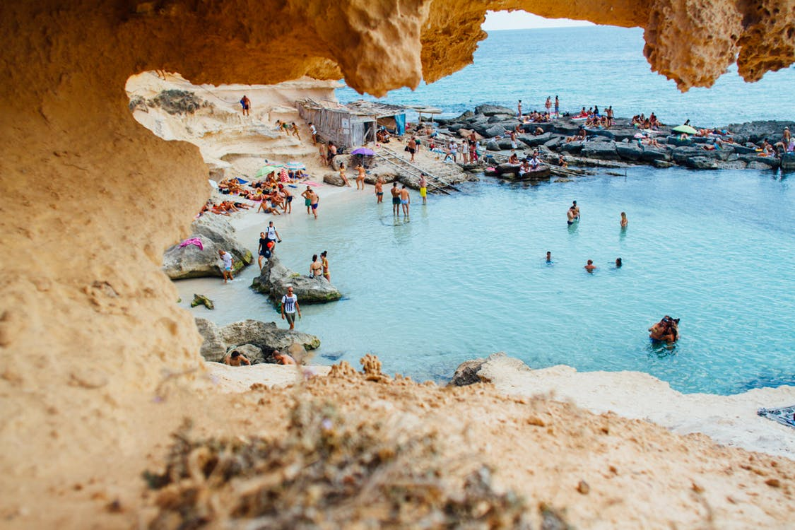
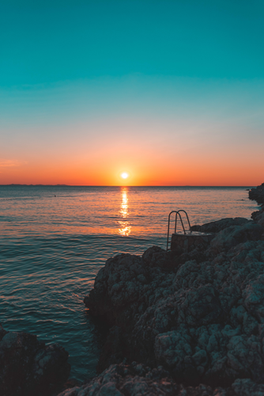
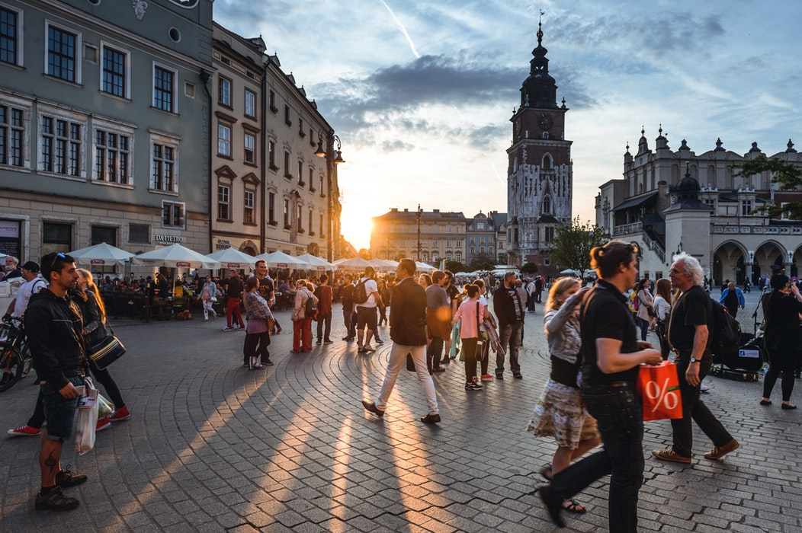
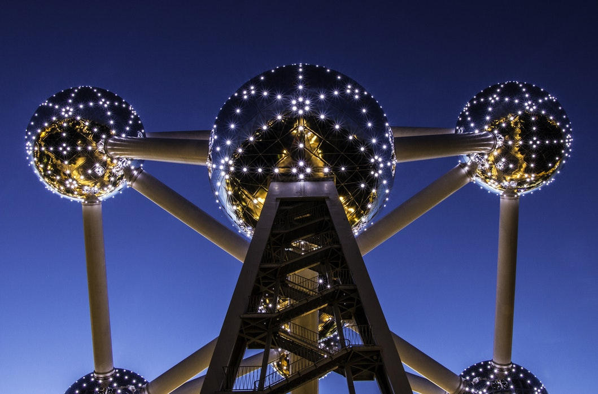

Salou

Salou is a municipality of the comarca of Tarragonès, in the province of Tarragona, in Catalonia, Spain. The city is approximately 10 km from Tarragona and Reus on the Costa Daurada and 112 km from Barcelona. Aside from its string of beaches interrupted by rocky coves, and its landscaped promenade, one of its main attractions is the PortAventura World resort. The Dutch movie Costa! and the television series with the same title were both filmed in Salou. I went to Salou two summers ago with my family and it’s the perfect family spot. We stayed in a mobile home to add to the whole experience!
Zadar

Zadar is the oldest continuously inhabited Croatian city. It is situated on the Adriatic Sea, at the northwestern part of Ravni Kotari region. Zadar serves as the seat of Zadar County and the wider northern Dalmatian region. The city proper covers 25 km2 with a population of 75,082 in 2011, making it the second largest city of the region of Dalmatia and the fifth-largest city in the nation. I went to Zadar last summer and really enjoyed the cultural experience. It is the perfect happy medium between a nice sun holiday and a party holiday!
Krakow

Kraków is the second largest and one of the oldest cities in Poland. Situated on the Vistula River in the Lesser Poland region, the city dates back to the 7th century.[4] Kraków was the official capital of Poland until 1596[5] and has traditionally been one of the leading centres of Polish academic, economic, cultural and artistic life. Cited as one of Europe's most beautiful cities,[6] its Old Town was declared a UNESCO World Heritage Site.
Belguim

Belgium,[A] officially the Kingdom of Belgium, is a country in Western Europe. It is bordered by the Netherlands to the north, Germany to the east, Luxembourg to the southeast, France to the southwest, and the North Sea to the northwest. It covers an area of 30,688 square kilometres (11,849 sq mi) and has a population of more than 11.4 million. The capital and largest city is Brussels; other major cities are Antwerp, Ghent, Charleroi and Liège.